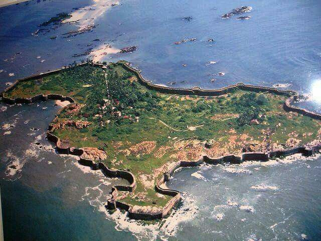
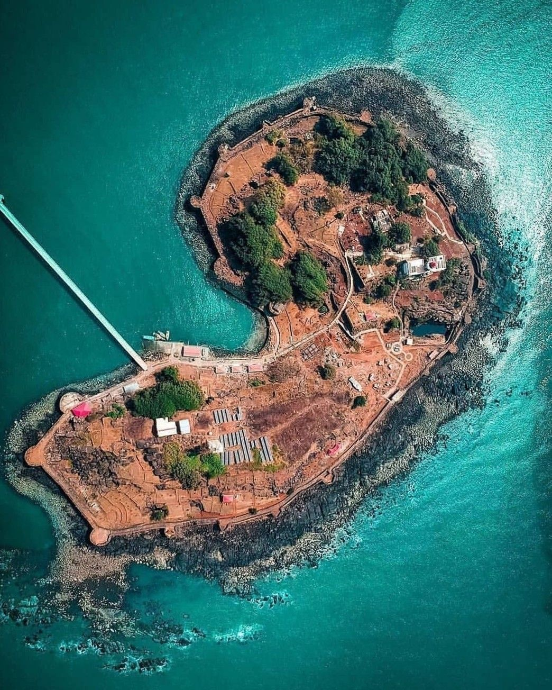
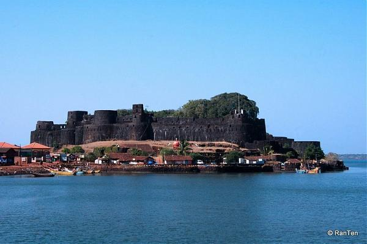

विजयदुर्ग किल्ला हा महाराष्ट्रातील प्रसिद्ध ऐतिहासिक किल्ल्यांपैकी एक आहे. हा किल्ला रत्नागिरी जिल्ह्यात अरब सागराच्या किनाऱ्यावर वसलेला आहे आणि समुद्रसपाटीपासून उंच असल्यामुळे आजूबाजूचा परिसर स्पष्ट दिसतो. या किल्ल्याचे संरक्षण दुरुस्ती आणि भक्कम बांधकामामुळे मजबूत मानले जात होते. याला पूर्वी “गजनीगड” असेही म्हणत.
इ.स. १६५० मध्ये आदिलशाही आणि मुघल सैन्यांच्या संघर्षात या किल्ल्याचे महत्त्व वाढले. छत्रपती शिवाजी महाराज यांनी ही किल्ल्याची रणनीती व लष्करी दृष्ट्या महत्त्व ओळखून विजयदुर्गाचा वापर केला.
विजयदुर्ग किल्ल्यावर दरवाजे, जलसाठा, निरिक्षण टोक, गोळाखोर जागा आणि समुद्राशी संबंधित अनेक सुरक्षा सुविधा आहेत.
या किल्ल्याशी संबंधित तटबंदी व युद्ध कथा प्रसिद्ध आहेत. किल्ल्यावरून समुद्र मार्गावर येणाऱ्या शत्रूंचे निरीक्षण करणे शक्य होते.
आज विजयदुर्ग किल्ला हा पर्यटनासाठी आणि इतिहास अभ्यासासाठी एक महत्त्वाचे स्थळ आहे.
